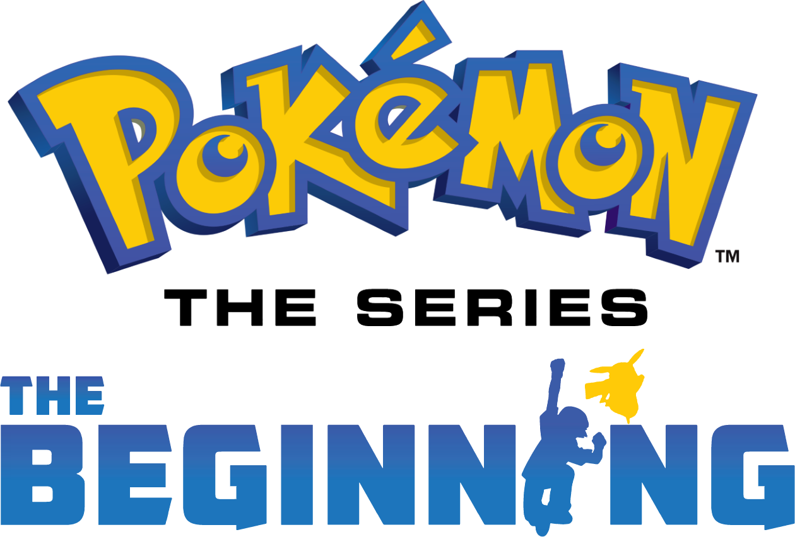
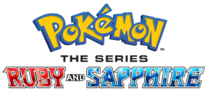
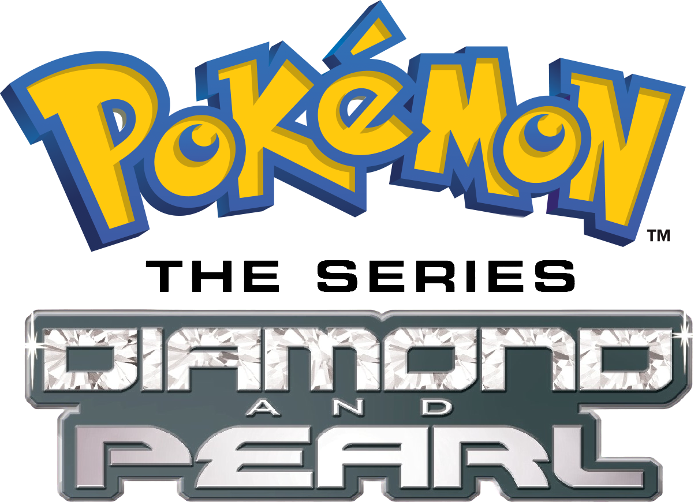
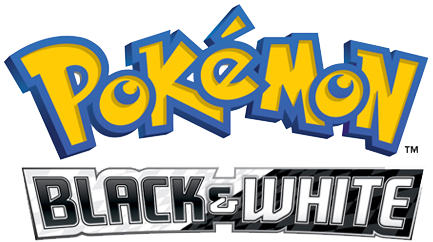
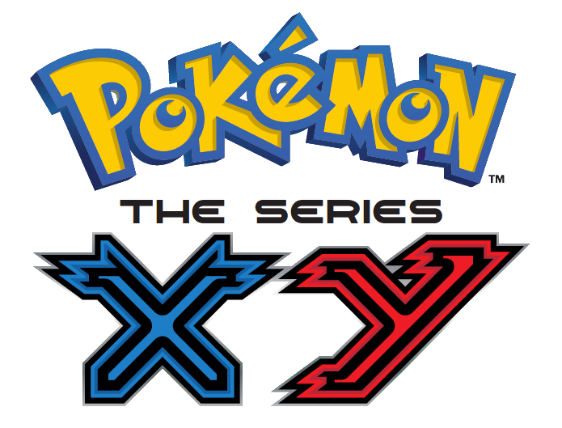
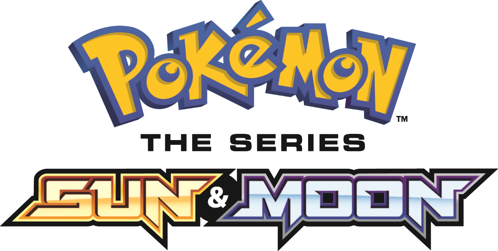
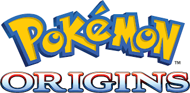
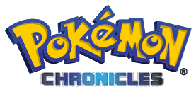
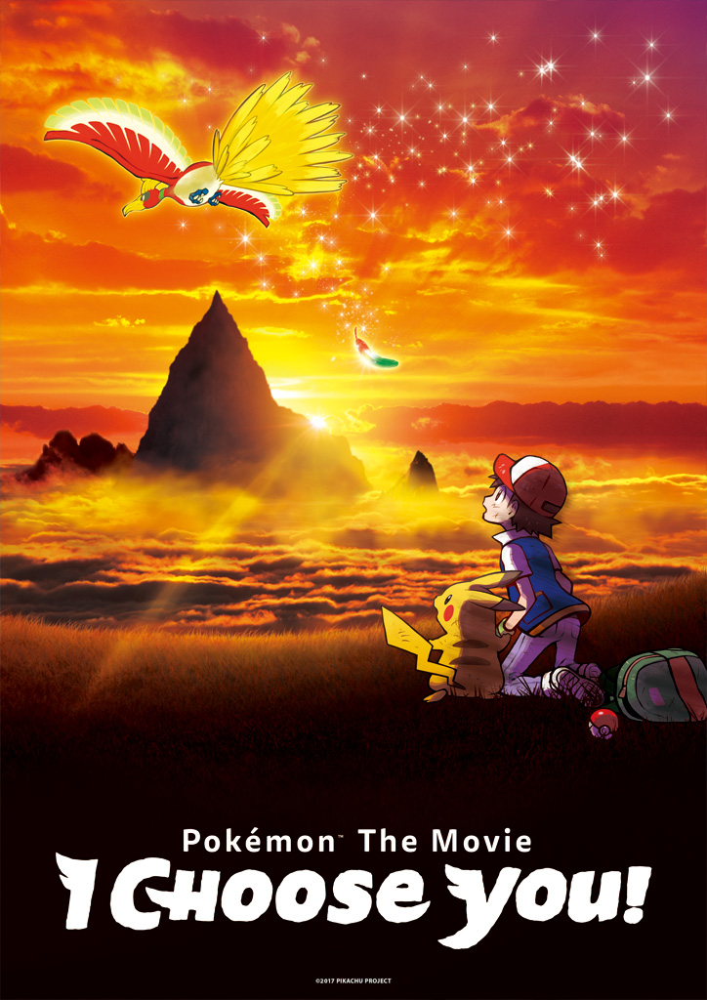
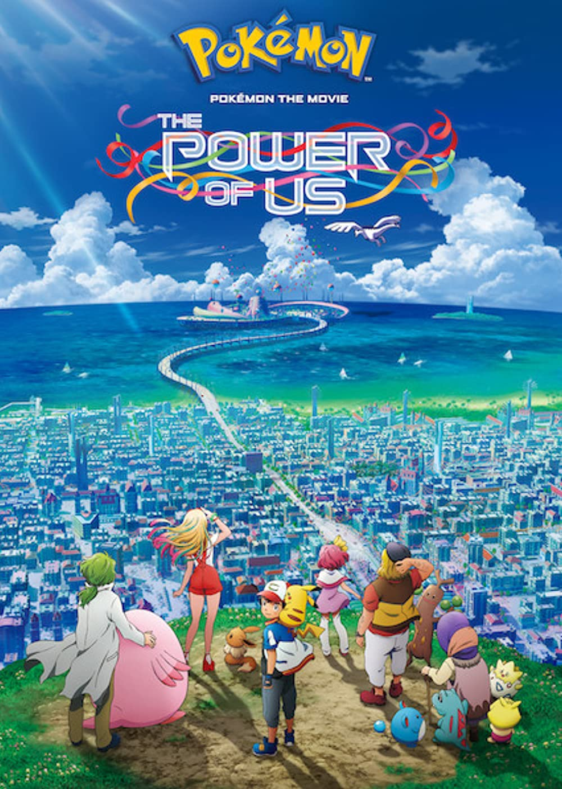

Anime Pokémon

Série Original com 5 temporadas de 274 episódios e 5 filmes

Série Ruby e Sapphire com 4 temporadas de 192 episódios e 4 filmes

Série Diamante e Peróla com 4 temporadas de 191 episódios e 4 filmes

Série Black & White com 4 temporadas de 142 episódios e 4 filmes

Série XY com 3 temporadas de 140 episódios e 3 filmes

Série Sun & Moon com 3 temporadas de 146 episódios e 3 filmes
Série Journey, a série em lançamento, com 2 temporadas de 49 episódio e 1 filme

O anime possui minisséires separadas como Pokémon Origins de 4 episódios

Série Paralela de 22 episódios lançada entre a Série Original e a Ruby e Sapphire

Contando ainda com varios filmes como
"I choose you!" e "The power of us"
